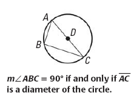

Transformations
If you are familiar with vector graphics software applications like Adobe Photoshop, you can take geometric objects you have created on the canvas and you move them, turn them, flip them, and re-size them. These processes have special names:
- translation
To move an object without changing the length of the lines or arcs that compose the object, nor changing any angular relationships between the lines or arcs. If the object were something you could hold in your hand, it would be like taking in your hand, and moving in any direction. This is a change in the position of the object. - rotation
This is effectively a translation but in a circular motion that changes the position of the object while not changing the length of line segments or arcs or the angular relationships between them. The rotation has a point on the coordinate system that is the point or axis of rotation. This can be the origin of the coordinate system, that is (0, 0), but it need not be. The rotation can be clockwise, with a value in degrees or radians that is greater than zero (> 0° or > 0), or it can be counter-clockwise, with a value in degrees or radians that is less than zero (< 0° or < 0) - reflection
This is flipping of the object along a line that creates a mirror image, with all coordinates forming the vertices of the object having the same distance from the line as the coordinates forming the vertices of the mirror image. - scaling
This re-sizes the object in the form, with the result image either larger (enlargement) or smaller (reduction). Scaling in optics is basically a magnification of the object from a point called the focus. Rays extend from the focus to the vertices of the object. An image can be created at any point along the rays, but the vertices of the image must retain the same angular relationships. In this way, the lengths of line segments or arcs change by proportionally by the same factor.
In discussing transformations of geometric figures, the term object is used to refer to the original geometric figure. In some geometry texts, the term preimage is used; understand that the word object will be used instead because it is consistent with the terms used in optics, in which objects and images are transformations created by optical lenses.
Translation
An object is described by the coordinates of its vertices, connected by line segments and arcs. In translation, all the vertices move up or down, left or right simultaneously, or with the same magnitude. This means that the length of all lines and arcs that connect the vertices and form the figure are preserved, along with their angular relationships. The size of the object does not change, nor is it spun in a circular motion about an axis.
The description of the translation operation is simply:
`(x + Deltax, y + Deltay)`
where x and y are the (x, y) coordinates of the object (original figure) and Δx and Δy indicate the movement or displacement of the translation.
Δx indicates movement along the x axis, so it is left-right or horizontal movement. Δx would be positive (Δx > 0) if translation is to the right, and negative (Δx < 0) if translation to the left. If Δx is zero (Δx = 0), then the image will not be offset from the object to the left or right.
Δy indicates movement along the y axis, so it is up-down or vertical movement. Δy would be positive (Δy > 0) if translation is upward, and negative (Δy < 0) if translation is downward. If Δy is zero (Δy = 0), then the image will not be offset from the object either upward or downward.
| Object Vertex | Object Coordinate | Operation `(x + Deltax, y + Deltay)` | Image Vertex | Image Coordinate |
|---|---|---|---|---|
| A | (−1, 2) | (x + 3, y + [−1])
translation rule: | A′ | (2, 1) |
| B | (−1, 5) | B′ | (2, 4) | |
| C | (−4, 6) | C′ | (7, 5) | |
| D | (−4, 2) | D′ | (7, 1) |
In the example shown to the right of the table above, the object is the figure colored blue, a quadrilateral with four vertices labeled A through D. The image is the figure colored red with four vertices labeled A′ to D′. (In general, the object vertices will be labeled with uppercase letters, while image vertices will have corresponding uppercase letters with the prime character ′.)
The object was moved three units to the right, and one unit down to produce the image. In the table, the operation is notated simply as `(x + 3, y − 1)`. This description of translation is shown as coordinate notation.
It is not at all necessary to visualize or see the image at all to get its coordinates. The only thing necessary is to add 3 to all the x values of all coordinates, then subtract 1 from all the y values of all coordinates.
Now suppose you are shown the object (blue) and image (red) visually in the figure at left. You are told to find the rule for the translation process, expressed in coordinate notation. The solution is to look at only one vertex, say B in the object, and then its corresponding vertex B′ in the image. B is (7, 1) and let's notate this as `(x_1, y_1)`, and B′ is (3, 2) and let's notate this as `(x_2, y_2)`. The value of Δx is going to be the difference between x value of the image coordinate from the x value of the object coordinate, or `Deltax = x_2 - x_1`. In B to B′ coordinates, this is `Deltax = 3 - 7 = -4`. For Δy, it is the difference between the y values of the object and image coordinates: `Deltay = 2 - 1 = 1`. The translation rule is then written as:
`(x, y) -> (x - 4, y + 1)`
Isometry. Translation produces two figures, the object and the image,
which are congruent. Congruent geometric figures have all lines and angles
exactly identical or equal. The word isometry is Greek-derived and
has two parts: iso- meaning equal
or same,
and metric
meaning measure.
So translation is a process that is isometry.
Vectors. A vector is a mathematical quantity (not merely a number) that has two properties:
- magnitude: This is a number representing a length. Note that it is NOT a length between two definite coordinates, and that is because a vector is translatable or movable. That means that the coordinates are not themselves properties of the length of the vector. Coordinates are used to compute the magnitude of the vector, but they are not properties or necessary to the vector
- direction: Vectors have two ends and can be thought of as being arrows. The one end of a vector is the tail of the arrow and is called the initial point. The other end of a vector is the arrow head and is called the terminal point. The direction of the vector is the angle of the terminal point of a vector in relationship to a reference axis, which is the x axis. The angle measure can be given in degrees or in radians. The angle measure is positive (greater than zero) when the vector angle is taken as a counter-clockwise difference from the x axis, and negative when taken as a clockwise difference.
Look at the figure below. To show the translation of the blue triangle, three vectors all with the same magnitude and direction are positioned with initial point on the vertices of the object. The image is reconstructed by drawing line segments connecting all the terminal points of the vectors. This shows that vectors are not really described by the coordinates, since all three vectors differ in initial points and terminal points.
Matrices
A matrix (plural matrices) is an advanced understanding of mathematics that can be used to describe transformations (translations, rotation, etc) of geometric objects. Before showing how that's done, let's look at the terms that are used to describe the properties or structure of a matrix. A matrix is shown below.
`|(a_11, a_12, a_13, a_14),(a_21, a_22, a_23, a_24),(a_31,a_32,a_33,a_34)|`
A matrix is composed of elements `a_(ij)` where i is the row of the element and j is the column of the element. The element itself can be a real number, say 3, but it need not be: it can be a variable such as x, or it can be an expression (one or more operations on real numbers or variables), such `7 / (z + 10)`. A matrix also is described by its dimensions; for a two-dimensional matrix, it is an r × c matrix, where r is the count of rows and c is the count of columns. The matrix above is a 3 × 4 matrix.
Matrix Used To Define Coordinates of Geometric Object Vertices
In geometry, matrices are used to define the coordinate values of the vertices of an object. In the figure below, in part labeled (b), the four coordinates A through D of a quadrilateral are shown in a 2 × 4 matrix. In fact, for any polygonal object, the matrix will be a 2 × n matrix where n is the number of vertices. The x values of the coordinates for the vertices are in row 1 (top row), while the y values are in row 2 or bottom row.
A point can be defined by a matrix too, and it is a 2 × 1 matrix, with again the x value at
Operations: Adding and Subtracting
Operations on two matrices perform the operations on their corresponding elements. This requires that the two matrices have the same dimensions. Let's look at addition:
`|(a_11,a_12),(a_21,a_22)| + |(b_11,b_12),(b_21,b_22)| = |(a_11+b_11,a_12+b_12),(a_21+b_21,a_22+b_22)|`
There are several things to see here. One is that matrices can form an equation. Recall that equations are special relationships composed of mathematical expressions. The sum of two matrices is shown as one expression. Another thing importantly seen here is that a result matrix shows the addition of elements that have the same row and column position. The result matrix element values are the sum of elements having the same row and column position.
The subtraction of two matrices should by now be very intuitive: Let's look at addition:
`|(a_11,a_12),(a_21,a_22)| - |(b_11,b_12),(b_21,b_22)| = |(a_11-b_11,a_12-b_12),(a_21-b_21,a_22-b_22)|`
The figure below shows matrices with actual numbers being added and subtracted. Note very well that the dimensions (r × c) are the same and it is required. In the examples below, an intermediate matrix shows the operations to make sure that the result matrix has the correct values (especially on subtraction). The intermediate matrix is a legitimate matrix since elements can be mathematical expressions. But the result matrix is the simplified matrix.
Using a Matrix To Show Translation
You have learned two important things now:
- the elements in a 2 × n matrix are used to define the coordinates of the vertices of a geometric object
- how to add matrices, and that the matrices must have the same dimensions
Look at the example below:
One thing is vital to the translation matrix: its x and y values in the elements must be identical, or else it is not a translation matrix, because it does not follow the rules of translation, which requires that the image be congruent (or an isometry) of the object (preimage).
If you were asked what the equivalent of the translation matrix is in coordinate notation, then you would show:
`|(-1,-1,-1),(3,3,3)|:\ \ \ \ (x,y) -> (x - 1, y + 3)`
Okay, given the coordinate notation for translation of `(x, y) -> (x + 5, y - 2)`, what is its translation matrix?
`|(5,5,5),(-2,-2,-2)|`
Multiplying Matrices
Multiplying matrices is different from adding and subtracting them.
Counts of rows and columns in the two multiplied matrices and in the result matrix. For one thing, the two multiplied matrices are not required to have the same dimensions, but the number of columns of the first matrix must equal the number of rows of the second matrix. That is, if you have a matrix A with m × n dimensions (that is m rows and n columms), then matrix B must have n rows. Matrix B can have any number of columns. The result matrix, AB, have the count of rows of the first matrix A and the count of columns of matrix B. To summarize:
`bbA\ (m xx n) * bbB\ (n xx p) = bb(AB)\ (m xx p)`
You will now learn why the columns of the first matrix must equal the rows of the second matrix. Here are two 2 × 2 matrices multiplied to each other to get the result matrix after the equal sign:
`|(a_11,a_12),(a_21,a_22)||(b_11,b_12),(b_21,b_22)|= |((a_11)(b_11)+(a_12)(b_21),(a_11)(b_12)+(a_12)(b_22)),((a_21)(b_11)+(a_22)(b_21),(a_11)(b_12)+(a_22)(b_22))|`
It is difficult to understand the pattern of multiplication from such a dry presentation as above. So look at the pattern of how the elements of the 2 × 2 matrices are multiplied, and the results summed to get values. Below, colored line segments connect the elements that are multiplied, and then the two products are summed. The position of the sum is located in the colored box. The colored arrows are suppose to show that the elements involved in multiplication that produce the result element intersect each other: the first matrix row elements are used to multiply the second matrix column elements, and the result goes where the intersection is.
The multiplication of two 2 × 2 matrices is shown below:
`|(2,0),(-1,3)||(1,2),(-1,-3)|= |((2)(1)+(0)(-1),(2)(2)+(0)(-3)),((-1)(1)+(3)(-1),(-1)(2)+(3)(-3))| = |(2,4),(-4,-11)|`
There are four matrices shown above, with the two multiplied, then an intermediate that shows the operations done, and then the result or simplified matrix.
In the figure below, two 5 × 5 matrices, A and B, are multiplied. To compute the row 2 column 2 element in matrix C, multiply the row 2 elements of first matrix (A) to the column 2 elements of second matrix (B). Take the leftmost element of matrix 1 and multiply it to topmost element of matrix 2. Now multiply the element to the right to the element that is next one down. Repeat this pattern to get five products, and now sum them up. The figure below is among the many ways that you can view matrix multiplication.
Okay, test yourself now. For each of the questions below, show the product (or result) matrix for the multiplication.
- `|(1,-1),(2,0)||(2,1),(0,1),(-1,3)|`
- `|(1,-1),(2,0)||(2),(1)|`
- `|(1,0)||(2),(-1)|`
- `|(1,-1),(2,0)||(2,1,0),(1,-1,3)|`
- `|(-2,1),(3,-1)||(1,0),(0,1)|`
- multiplication is not possible! Did you remember to do the test of dimensions? The number of columns of the first matrix must equal the number of rows of the second matrix. There are two columns in the first matrix, so there must be two rows in the second matrix, but there are three.
- The first matrix has two columns, and the second matrix must have two rows,
and it does. So the test is met. Let's do the multiplication:
`|(1,-1),(2,0)||(2),(1)| = |((1)(2)+(-1)(1)),((2)(2)+(0)(1))| = |(1),(4)|`
And this is a good result: A 2 × 2 multiplied to 2 × 1 must produce a 2 × 1 matrix, and we see this. - The first matrix has one row, so the second matrix must have one column,
and this is true so the operation is possible.
`|(1,0)||(2),(-1)| = |(1)(2)+(0)(-1)| = |2|`
This is the expected result: a matrix with one row and one column. It should be clear that when the first and second matrix are interchanged, `|(2),(-1)||(1,0)|`, this violates the dimensionality rule and no multiplication is possible. The means that unlike the multiplication of two numbers, which is commutative (that is, `a xx b = b xx a`), multiplication of matrices are not commutative. - The multiplication is allowed and it should result in a 2 × 3 matrix
`|(1,-1),(2,0)||(2,1,0),(1,-1,3)|`
`\ \ = |((1)(2)+(-1)(1),(1)(1)+(-1)(-1),(1)(0)+(-1)(3)),((2)(2)+(0)(1),(2)(1)+(0)(-1),(2)(0)+(0)(3))|`
`\ \ = |(1,2,-3),(4,2,0)|`
- A 2 × 2 multiplied to another will produce the same:
`|(-2,1),(3,-1)||(1,0),(0,1)| = |((-2)(1)+(1)(0),(-2)(0)+(1)(1)),((3)(1)+(-1)(0),(3)(0)+(-1)(1))| = |(-2,1),(3,-1)|`
Note that the result matrix is the same as the first matrix, and there is a reason why. The second matrix has a diagonal of 1 values. This is called the identity matrix. It is the equivalent of multiplying a plain real number by 1: you get the number as the result.
Reflections
It's already been indicated that reflections are mirror images. They can be reflections of points, line segments, lines or polygonal objects.
The reflection is typically around or about a line. The line of reflection can be vertical or horizontal or actually at any line. The line of reflection can pass through a point, the line segment, the line or the polygon, or it can be some distance from the object reflected.
When a line of reflection passes through a point, it produces the point itself at the same position. If the point is away from the line of reflection, draw a line from the point to the line of reflection that is perpendicular. The reflected point is on the perpendicular that is the same distance from the original point but on the opposite side of the reflection line.
In the reflections of the polygons below, one passes through the polygon (the vertical one) while another passes through a vertex without passing through the polygon (the horizontal one). The image overlaps in one case,
Rotations
Rotations of geometric objects (points, line segments, lines, polygons) are described by two properties
- An axis or center of rotation occurs. Everything spins on that axis.
- The angle of rotation: this is value measured in degrees or radians that specifies the quantity of the turn.
Manual Rotation. Drawing programs like Adobe Photoshop allow you to specify an axis of rotation and the angle, so it is made easy. But before computers, it had to be done manually with a protractor. The protractor is a semicircle with angle marks, and a straight edge that has a ruler. How does one manually rotate an object to produce its image? In the figure below, the object shown is rotated 120° to produce an image (because 120° < 0, that means a counterclockwise rotation).
- The axis or center of rotation is placed where desired.
- A ray is extended from the axis of rotation P to one vertex of the polygon A.
- Another ray is drawn at a 120° angle counterclockwise from the `bar(PA)`
- The distance from point P to point A is measured using the protractor.
- Now measure the same distance from point P to a new point A′ along the ray that is 120° from the `bar(PA)` ray.
- The process of making new rays for all vertices and their 120° angle rays is repeated, along with measuring distances from the axis of rotation.
Rotations Around The Origin
The following rules are true for rotations of 90° where the axis of rotation is (0, 0), the origin.
- For any point `(a, b)`, a 90° rotation puts the point at `(-b, a)`
- For any point `(a, b)`, a 180° rotation puts the point at `(-a, -b)`
- For any point `(a, b)`, a 270° rotation puts the point at `(b, -a)`
Rotations with Matrices
The matrices below will help calculate result matrices that do the rotation. One does not necessarily need to memorize the rules above if one can memorize the rotation matrices, and can see the result of doing a matrix multiplication.
Compositions of Transformations
Symmetry: More on Reflection
Symmetry returns the discussion back to reflections. Lines of symmetry are also lines of reflection, but they are special cases of lines of reflection. A line of symmetry can pass through a polygon and the reflection on one side must be the mirror image on the other.
The three hexagons below all have different counts of lines of symmetry. Hexagon (a), with one pair of the sides longer than the other two pairs, has only two lines of symmetry. Hexagon (b) is a regular hexagon, with all sides equilateral and equiangular.
Rotational Symmetry
Here's how to find rotational symmetry:
- Look at the figure or polygon to be rotated (turned).
- Now rotate the figure or polygon counterclockwise. There one of two
points where you will stop rotating when:
- the figure or polygon looks identical to the figure or polygon before rotation started
- the rotation has reached 180°
- Note the angle of rotation when you stopped
- Stop rotating completely when you have reached 180°
The figure below has two angles of rotational symmetry at 90° and 180°, but not at 45°.
What is the rotational symmetry of a parallelogram? A regular octagon? A trapezoid?
A parallelogram will rotate 180° before it looks like itself. A regular octagon will stop four times, including at 180°: so the rotational symmetry is 45°, 90°, 135°, and 180°. A trapezoid will turn the 180° and never look like itself, and has no rotational symmetry.
Dilations: Understanding Scaling
Scaling a polygon involves first placing a point out of the plane of the polygon. This point can be called the focus. While the position of the focus might be anywhere, for simplicity, a line extending from the focus to the perpendicular of the plane should pass through the area of the polygon, best within the geometric center of the polygon (this can often be found by creating all lines of symmetry and finding where they intersect at a common point.
Now extend rays (or vectors) from the focus through the vertices of the polygons. Construct a polygon image which will be similar to the object polygon, with the vertices of the polygon image on the rays extending from the focus, and the plane of the image polygon parallel to the object polygon. This is shown in the figure below.
A value that is a scaling factor k is defined. If k = 1 then it is the position of the object polygon itself on the rays from the focus. If k < 1, then it is an image polygon between the focus and the object polygon, and it represents a reduction of the object as a similar polygon. If k > 1, then it is an image polygon where the object polygon is between the image polygon and the focus. This represents an enlargement.
A scaling (dilation) can occur with the image polygon encased by or encasing the object polygon. In the figure below, an object with interior angles preserved is created by doubling the lengths of the sides. In this case, it is obvious that k = 2, since an enlargement occurred, and the doubling of the lengths of the sides doubled the object size.
Now consider an object now shown visually but defined by a 2 × n matrix. Its lengths are increased by a scale factor of 4. The following operation is defined:
`k|(x_1,x_2,x_3,x_4),(x_1,x_2,x_3,x_4)| = |(kx_1,kx_2,kx_3,kx_4),(kx_1,kx_2,kx_3,kx_4)|`
The example below shows this operation:
Note that the value of k is not within a matrix. It is a scalar, and not a matrix. If it were a matrix, then it would violate the dimensionality requirement for matrices being multiplied, and would not be allowed.
In the example below, a reduction occurs, and it moves toward the origin of the coordinate system. What would cause the reduction to occur in a way that does not move towards the origin?
In the image below, a two-step transformation occurs. The labeling of the triangle suggests that a translation occurs first: 5 to the right, then 1 up. Coordinate notation is `(x, y)->(x + 5, y + 1)`.

The matrix expression is better, since it also defines the coordinates:
`|(5,5,5),(1,1,1)| + |(-4,-2,-2),(1,2,1)| = |(1,3,3),(2,3,2)|`
This operation thus yields a triangle with coordinates (1,2),(3,3),(3,2).
Determine the coordinates of the dilation (scaling) of the following polygons:
- `A(-1,1),B(2,1),C(1,2); k = 3`
- `A(-4,4),B(-4,8),C(0,4); k = 1/4`
The best way to calculate the values quickly is first to convert all the coordinates to a 2 × n matrix. Then do a matrix multiplication using the scale factor (as a scalar). Then convert the resulting matrix back to the
- `A(-1,1),B(2,1),C(1,2) ->` show in matrix form `-> |(-1,2,1),(1,1,2)|`
multiply by the scale factor:
`3|(-1,2,1),(1,1,2)| = |((-1)(3),(2)(3),(1)(3)),((1)(3),(1)(3),(2)(3))| = |(-3,6,3),(3,3,6)|`
and now show in coordinate form for easy plotting:
`A'(-3,3),B'(6,3),C'(3,6)`The object and its image are plotted below. You can see how the scaling done from the origin (0, 0), which is the focus.
- `A(-4,4),B(-4,8),C(0,4) ->` show in matrix form `-> |(-4,-4,0),(4,8,4)|`
multiply by the scale factor:
`1/4|(-4,-4,0),(4,8,4)| = |((-4)(1/4),(-4)(1/4),(0)(1/4)),((4)(1/4),(8)(1/4),(4)(1/4))| = |(-1,-1,0),(1,2,1)|`
and now show in coordinate form for easy plotting:
`A'(-1,1),B'(-1,2),C'(0,1)`The object and its image are plotted below. You can see how the scaling done from the origin (0, 0), which is the focus.
Circles
Use Properties of Tangents
A circle is set of all points in a plane equidistant from a point called
the center. A circle can be designated/named as circle <center
point>,
such as circle P
for a circle with center P. It can
be symbolized ⊙P.
The radius of a circle is line segment from the center to any point on the circle.
A chord is line segment in a circle with endpoints on the circle. The diameter of the circle is a chord that contains the center of the circle.
A secant is a line that intersects a circle at two points. A tangent is a line in the plane of the circle that intersects the circle at exactly one point, which is called the point of tangency.
Two circles that intersect can intersect at one or two points. If at one
point, these are tangent circles. Non-congruent circles with a
common center are called concentric circles. Two circles that
do not intersect but have common points on a tangent line have what are
called common tangents.
Various theorems follow from all these definitions and previous terms.
Theorem. A line is tangent to a circle if and only if it is perpendicular to the endpoint of the radius of the circle.
Angles (Arc Measures)
An angle that has its vertex at the center of its circle is called a central angle. The angle quantity, or measure of the angle, can be signified as m∠ACB. Note that the vertex is signified as the point in the middle.
The minor arc is the arc between the two endpoints that is the smallest angle. The major arc is the arc with the greatest angle. A semicircle is an arc whose endpoints are the endpoints of a diameter.
Two circles are congruent circles if they have the same radius. Two arcs are congruent arcs if they have the same angle and are arcs of same circle or congruent circles. If ⊙C is congruent to ⊙D, then write ⊙C ≅ ⊙D.
Postulate. The measure of an arc formed by two adjacent arcs is the sum of the measures of the two arcs.
Apply Properties of Chords
Theorem. In the same circle, or in congruent circles, two minor arcs are congruent if and only if their chords are congruent.
Theorem. If a chord is perpendicular bisector of another chord, then the first chord is a diameter.
Theorem. If a diameter is perpendicular to a chord, then it bisects the chord and its arc.
Theorem. two chords are congruent if and only if they are equidistant in the center of the same circle or in congruent circles.
Inscribed Angles and Polygons
An inscribed angle has its vertex on the circle and has sides forming chords of the circle.
The arc that contains the points between the endpoints of the chords of the angles is called an intercepted arc.
Theorem. The measure of an inscribed angle is one half the measure of its intercepted arc.
Theorem. If two inscribed angels of a circle intercept the same arc, then the angles are congruent.
A polygon is an inscribed polygon if all of its vertices lie on a circle. The circle that contains the vertices is a circumscribed circle.
 Theorem. If a right triangle is inscribed in a circle, then the hypotenuse is a diameter of the circle. Conversely if one side of an inscribed triangle is the diameter of the circle, then the triangle is a right triangle and the angle opposite the diameter is the right angle.
Theorem. A quadrilateral can be inscribed in a circle if and only if its opposite angles are supplementary.
Other Angle Relationships in Circles
Theorem. If a tangent and a chord intersect at a point on a circle, then the measure of each angle formed is one half the measure of its intercepted arc.
Theorem. If two chords intersect inside a circle, then the measure of each angle is one half the sum of the measures of the arcs intercepted by the angle and its vertical angle.
Theorem. If a tangent and a secant, two tangents, or two secants intersect outside a circle, then the measure of the angle formed is one half the difference of the measures of the intercepted arcs
Segment Lengths in Circles
Theorem. If two chords intersect in the interior of a circle, then the product of the lengths of the segments of one chord is equal to the product of the lengths of the segments of the other chord.
Theorem. If two secant segments share the same endpoint outside a circle, then the product of the lengths of one secant segment and its external segment equals the product of the lengths of the other secant segment and its external segment.
Theorem. If a secant segment and a tangent segment share an endpoint outside a circle, then the product of the lengths of the secant segment and its external segment equals the square of the length of the tangent segment
Graphing Equations of Circles
The equation of a circle centered at the origin is:
`x^2 + y^2 = r^2`
The equation of a circle centered at coordinate `(h, k)` is:
`(x - h)^2 + (y - k)^2 = r^2`
Length and Area Measure
Areas of Triangles and Parallelograms
Postulate. The area of a square is the square of the length of its side. Postulate. If two polygons are congruent, they have same area. Postulate. Area of a region is the sum of the areas of nonoverlapping parts.
Theorem. Area of rectangle is product of its base and height.
Proof. In the figure on the right, there are three squares (UVTQ, RNSV, and MNPQ) and two rectangles (MRVU and VSPT). We already know from postulates above that the area of a square is the square of the length of its side. The figure shows the following:
- Area UVTQ = b2
- Area RNSV = h2
- Area MNPQ = (b + h)2
- Area MRVU = Area VSPT
From this, we see that area MNPQ is the sum of these areas: area RNSV + area UVTQ + 2 × area MRVU. This says area `(b + h)^2 = b^2 + h^2 + 2 xx R` where R is the area of polygon MRVU, a rectangle. Let's solve for R:
`(b + h)^2 = b^2 + h^2 + 2 xx R`
`b^2 + 2bh + h^2 = b^2 + h^2 + 2 xx R`
Subtract `b^2` and `h^2` from both sides, and divide by 2 on both sides:
`R = bh`
This says the area of MRVU is `bh`, which is what was to be proved.
Theorem. Area of a parallelogram is product of the length of its base and its height.
Proof. The parallelogram PQRS can have its height drawn from vertex Q down to line segment `bar(PS)` which is perpendicular. This forms triangle QPT, which can be cut from the parallelogram, and the edge `bar(PQ)` can be mated to edge `bar(RS)`. This will actually result in a rectangle QRVT. Since it is a rectangle, and it has been proven that the area of a rectangle is product of base length and height, then so is the proof that the parallelogram is product of base and height.
Theorem. The area of a triangle is one-half of the product of the length of its base to its height. The height is the distance from the vertex opposite the side of the triangle considered the base, and can be drawn as a perpendicular from the base to the vertex.
Proof. Consider any triangle XYW. Duplicate it, and pivot it so that congruent sides are arranged parallel, and that the two edges of a congruent side are mated with each other (diagonal `bar(YW)`). This is now a parallelogram, whose area has already been shown to the product of the base and the height. Since it took two triangles to create the area of the parallelogram, and the areas were identical (because they were duplicated), then the area of a triangle must be half the area of its parallelogram.
Areas of Trapezoids, Rhombuses and Kites
Theorem. The area of a trapezoid is half the product of the height and the sum of the length of the bases.
Proof. In the figure at left, trapezoid PQRS has been divided to contain two triangles, red-colored PQR and blue-colored PRS. The area of triangles have already been shown to be `1/2bh` where `b` is the base and `h` is the height. It is clear that the area of the trapezoid is the sum of the area of the two triangles. Triangle PQR has an area of `1/2b_2h` and the area of triangle PRS is `1/2b_1h`. (Recall that if the line segment `bar(PQ)` is extended so that it forms a perpendicular from point R, this segment can be seen as a height of the triangle from the vertex (R) opposite the base (segment `bar(PQ)`). Therefore:
`text(trapezoid )PQRS text( area) = 1/2b_1h + 1/2b_2h = 1/2h(b_1 + b_2)`
And so the theorem is proved.
Theorem. The area of a rhombus is half the product of the lengths of its diagonals. The proof is shown within the kite proof.
Theorem. The area of a kite is half the product of the lengths of its diagonals.
 Proof. The figure at left shows a kite-type polygon PQRS, and it is
clear that the kite is two congruent triangles, the red-colored PQR triangle
and the blue-colored PRS triangle. The two triangles have a common base
`bar(PR)` whose length is `d_2`. The height of triangle PQR is ½ the
length of `d_1`, and this is true for triangle PRS too. So applying the
triangle area theorems:
Proof. The figure at left shows a kite-type polygon PQRS, and it is
clear that the kite is two congruent triangles, the red-colored PQR triangle
and the blue-colored PRS triangle. The two triangles have a common base
`bar(PR)` whose length is `d_2`. The height of triangle PQR is ½ the
length of `d_1`, and this is true for triangle PRS too. So applying the
triangle area theorems:
`text(area of )PRS = 1/2(1/2d_1)d_2 = 1/4d_1d_2`
`text(area of )PQR = 1/2(1/2d_1)d_2 = 1/4d_1d_2`
Since the area of PQRS is the sum of the two areas:
`text(area of )PQRS = text(area of )PQR + text(area of )PRS = 1/4d_1d_2 + 1/4d_1d_2 = 1/2d_1d_2`
The rhombus is a special case of a kite in which the diagonals bisect each other at their midpoint. So the proof of an area of a rhombus is just a special case of a kite being the area of two isosceles triangles instead of two scalene triangles.
Perimeter and Area of Similar Figures
Theorem. If two polygons are similar with lengths of corresponding sides in the ratio of a:b, then the ratio of the areas is a2:b2
`text(side length of polygon I)/text(side length of polygon II) = a/b`
`text(area of polygon I)/text(area of polygon II) = a^2/b^2`
Proof. Consider two similar rectangles at right, one with short side (height) of length 10 meters and the other with its short side having length 4 meters. We can suppose the long side of the 10-meter short-side rectangle is x. Because they are similar, the long side of the 4-meter short-side rectangle must be 4/10x. Since the area of a rectangle is the product of its long side and its short side, then:
`text(area of 10 m rectangle) = 10x`
`text(area of 4 m rectangle) = 4(4/(10)x) = 16/10x = 1.6x`
The ratio of the sides of the bigger-to-smaller `= 10/4`. The ratio of the areas is `(10x)/(1.6x) = 10/1.6 = 100/16`.
We can see that the relationship of the ratio of the length of sides when squared is equal to the ratio of the areas of the polygons:
`10/4 -> (10/4)^2 = 100/16`
And so the theorem is proved.
Circumference and Arc Length
Theorem. The circumference (C) of a circle is product of the transcendental number pi (π) and the diameter, which is also twice the radius of the circle. `C = pid text( or ) C=2pir`
Corollary. In a circle, the ratio of the length of a given arc to the circumference is equal to the ratio of the measure of the arc to 360°.
`(text(arc length of )arc(AB))/(2pir)=(marc(AB))/(360deg)`
`(text(arc length of )arc(AB))=(2pir)*(marc(AB))/(360deg)`
Areas of Circles and Sectors
Theorem. The area of a circle is π times the square of the radius
The proof of the area of a circle given in proof of area of regular polygon.
 Theorem. The ratio of the area of a sector of a circle to the area of
the whole circle is equal to the ratio of the measure of the intercepted arc
to 360°.
Theorem. The ratio of the area of a sector of a circle to the area of
the whole circle is equal to the ratio of the measure of the intercepted arc
to 360°.
`(text(area of sector )APB)/(pir^2)=(marc(AB))/(360o)`
`(text(arc length of )arc(AB))=(2pir)*(marc(AB))/(360deg)`
Areas of Regular Polygons
A regular polygon is one constructed such that all its sides have equal lengths. The diagram shows a regular polygon inscribed within a circle. The center of the polygon is the center of the circle, and the radius of the polygon is the radius of the polygon is the radius of the circle.
The distance from the center to any side of the polygon is called the apothem of the polygon, and is the height to the base of an isosceles triangle in which two radii are the legs.
The central angle of the polygon is formed by two radii drawn to consecutive vertices of the polygon. This angle can be found by divding 360° by the number of the sides.
Theorem. The area of a regular n-gon with side length s is half the product of the apothem a and the perimeter P, so `A = (aP)/2`, or `A = 1/2a * ns`
Proof of the Area of a Circle. A regular polygon has n sides of equal length s with height of the apothem a. But suppose n increases to the thousands and millions, and even to infinity. The apothem a becomes the radius of the circle, and side s goes down towards zero length. We know that circumference of a circle is 2πr. We also know that the length of a side of a polygon with n = ∞ sides has s = 2πr/n, meaning ns = circumference of circle. The area then becomes `A = 1/2a * ns = 1/2(r)(2pir) = pir^2` given what happens as `n -> oo` and a becoming r and ns becoming the circumference. And so the area of a circle is proved as the area of infinitely smaller triangles approximating its area.
Use Geometric Probability
The probability of an event occurring can be described with words, but in mathematics, it is described with values. These values range from 0 to 1. If something has a probability P = 1, then the event is certain to occur. If something has a probability P = 0, then it is impossible for it to occur. If something is as equally likely to occur or not occur, the P = 0.5.
A geometric probability is a ratio that involves geometric area such as length or area.
If `bar(AB)` is a segment that contains segment `bar(CD)`, and point K is chosen at random on `bar(AB)`, the probability of point K being on `bar(CD)` is the ratio of length of `bar(CD)` to length of `bar(AB)`.
If J is a region containing region M, and a point K is chosen at random within region J, the probability of it being in region M is the ratio of the area of M to the area of J.